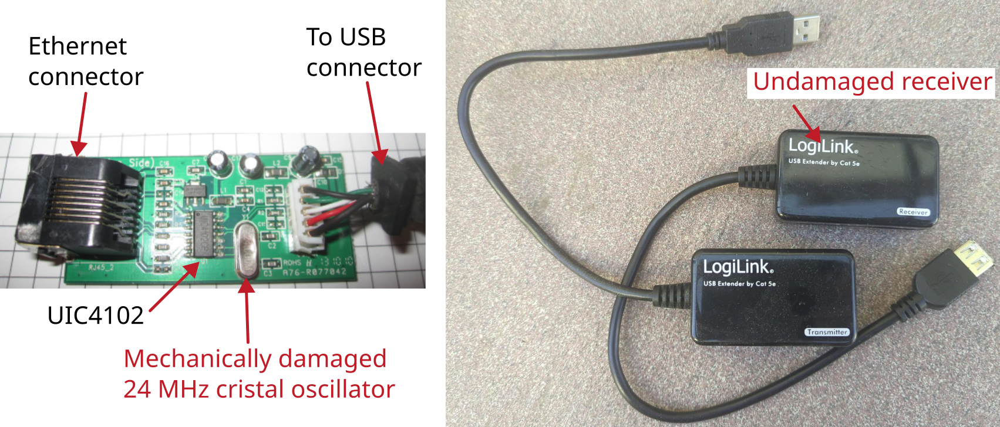

LogiLink USB Extender by Cat 5e

Manufacturer: LogiLink
Type: UA0021D
The device is for extending USB connections via Ethernet.
Description of failure
Someone has driven a car over the receiver. Since then, the data transmission USB - Ethernet - USB no longer works.
Failure investigation
At first glance, it is noticeable that the quartz oscillator is mechanically damaged.
The USB extension via Ethernet is compared with a new unit.
This shows that the quartz crystal only oscillates when the device is connected to a PC.
The crystal does not oscillate when a power supply is fed in via the USB connection (e.g. with a power bank).
The crystal on the transmitter oscillates perfectly (measured using an oscilloscope).
The crystal on the receiver does not oscillate correctly (amplitude too small and changes constantly, no oscillation after a few seconds).
As initially assumed, the problem lies with the 24 MHz crystal oscillator.
This is replaced and the USB over Ethernet extension works again.